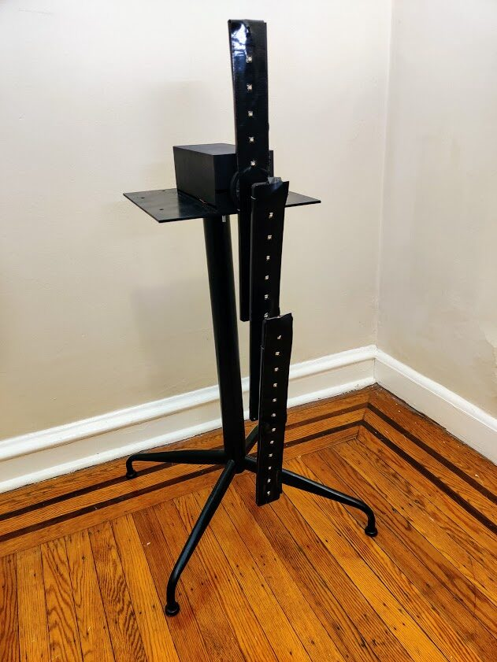
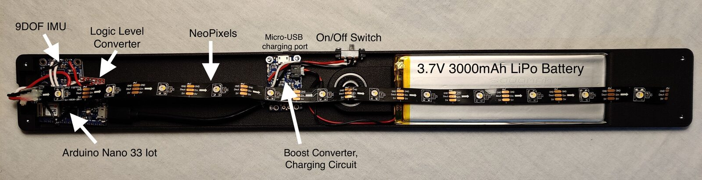
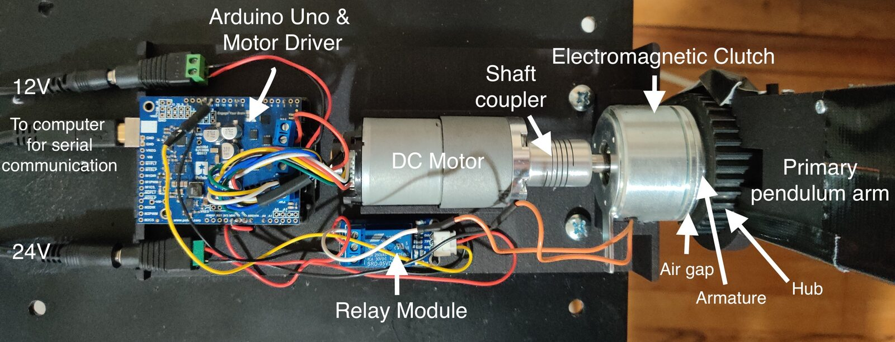
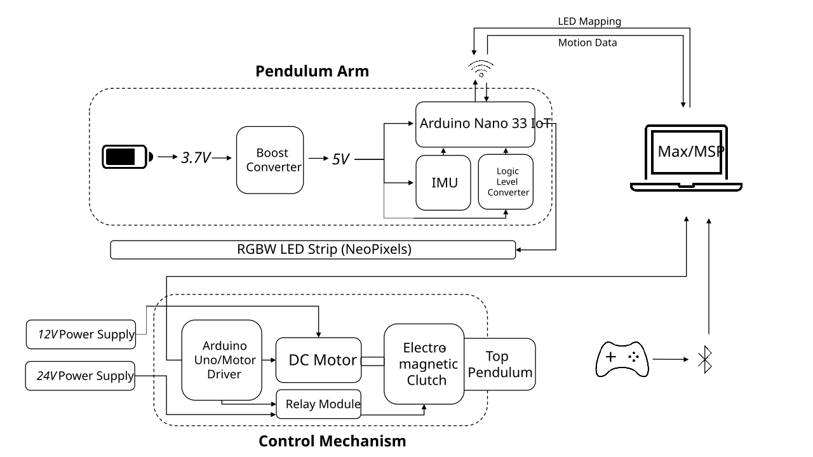
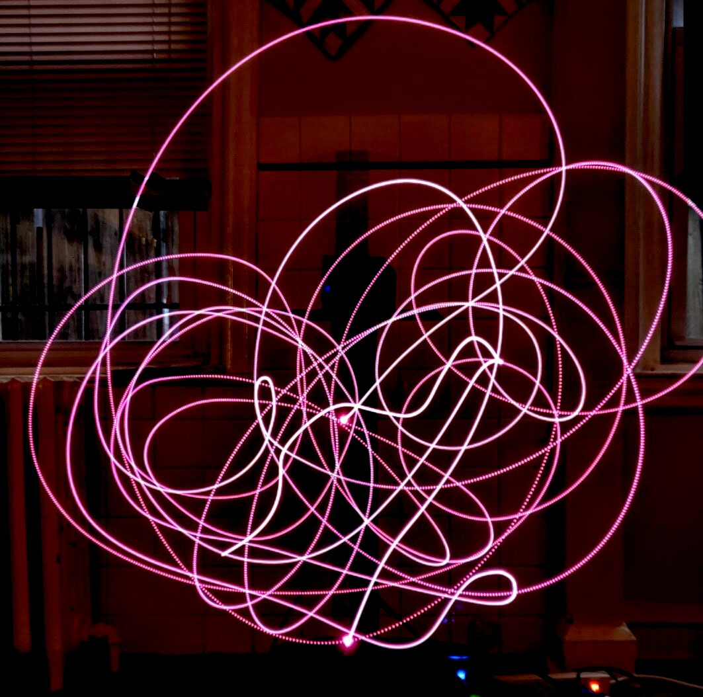
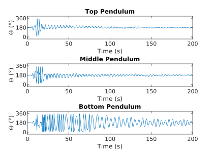
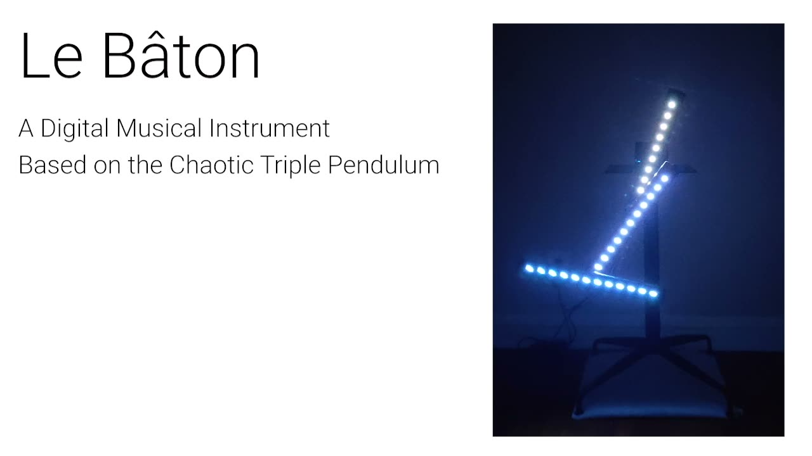

Le Bâton: A Digital Musical Instrument Based on the Chaotic Triple Pendulum
Abstract
This paper describes Le Bâton, a new digital musical instrument based on the nonlinear dynamics of the triple pendulum. The triple pendulum is a simple physical system constructed by attaching three pendulums vertically such that each joint can swing freely. When subjected to large oscillations, its motion is chaotic and is often described as unexpectedly mesmerizing. Le Bâton uses wireless inertial measurement units (IMUs) embedded in each pendulum arm to send real-time motion data to Max/MSP. Additionally, we implemented a control mechanism, allowing a user to remotely interact with it by setting the initial release angle. Here, we explain the motivation and design of Le Bâton and describe mapping strategies. To conclude, we discuss how its nature of user interaction complicates its status as a digital musical instrument.
Author Keywords
Chaos, triple pendulum, digital musical instrument, mapping, gesture recognition, sound synthesis
CCS Concepts
•Hardware → Sensor devices and platforms; •Applied computing → Media arts; •Human-centered computing → Sound-based input / output;
Introduction
Chaotic systems, a type of nonlinear dynamic system characterized by a strong sensitivity to initial conditions, have inspired many approaches to computer music composition. Though this research primarily occurred during the late 1980s and early 1990s, there has been continued interest in using chaotic data to generate music [1][2][3][4]. Approaches generally involve mapping the output of a chaotic equation to audio synthesis parameters such as MIDI data (i.e. pitch) [5][6], time domain-based models (i.e. digital waveguides) [7][8][9][10], and frequency domain-based models (i.e. granular synthesis) [11]. Additionally, chaos theory has been used as a generator of musical variations [12].
The research into the application of chaos to computer music has primarily been focused on iterating over chaotic attractors or maps with computer programs. Typically, a composer inputs some number of equations (usually differential or recursive in nature) with initial parameters into a program which are then iterated using various numerical or discrete-time methods. The output data is then mapped to a sound synthesis. This is known as Functional Iteration Synthesis [13].
Because the chaotic data is being generated entirely with a computer, it can be confusing to audiences why this compositional approach is unique when compared with other algorithmic composition approaches. Canadian composer Barry Truax writes “from a more philosophical or aesthetic point of view, it is not clear that an arbitrary mapping of a nonlinear function [onto the pitch of successive notes] is inherently more musical than, for instance, a random or stochastic function. The musicality may reside in the musical knowledge of the mapper more than in the source function" [11]. In this project, we seek to continue research into the application of chaotic systems to computer music by building a chaotic digital musical instrument with a visual feedback mechanism, allowing for a coherent audiovisual experience.


Le Bâton
Le Bâton (pictured above) is a novel interface for musical expression based on the triple pendulum, a simple physical system that can undergo visible chaotic motion. Le Bâton provides embedded visualization [14] and remote sonification of motion data in real-time through embedded wireless inertial measurement units (IMUs) and allows for user interaction through remotely setting its initial conditions. Because its unique motion is the core generator of musical ideas, Le Bâton can be contextualized with other digital musical instruments that are based around mechanical systems that have some inherent behavior. These instruments typically involve a user exciting a mechanical system with some initial energy that provokes a physical reaction, which is then observed with sensors and mapped to sound. Examples include the the Gyrotyre [15], the Springwave [16], and Kugelschwung [17]. In the Gyrotyre, gyroscopic precession and rotational inertia are sonically explored in a handheld bicycle wheel that is outfitted with sensors. The Springwave is a DMI built around a loose metal spring, using capacitive pickups to measure spring displacement for use in a sound synthesis. In Kugelschwung, the motion of a series of low-friction simple pendulums are sonified using light sensors.
In this paper, we review the dynamics of pendular systems in both the non-chaotic and chaotic regimes (Section 2), we describe the design and engineering of Le Bâton (Section 3), and we implement various mapping strategies (Section 4). To conclude, we discuss how the interaction capabilities of Le Bâton complicate its status as a digital musical instrument and motivate future work (Section 5).
Dynamics of Pendular Systems
A pendulum is defined as “a weight suspended from a pivot so that it can swing freely” [18]. A double pendulum is simply a pendulum with another pendulum attached to its end. A triple pendulum adds a third. The increase in complexity of motion when comparing a simple pendulum to these double and triple pendular systems is truly something to behold.
A wealth of research is dedicated to analytically modeling and experimentally measuring double, triple, and even N-link pendular systems for application primarily in seismic isolation of vibration for control systems [19] [20]. One possible approach for modeling the dynamics of triple pendulums is to solve equations of motion using Hamiltonian or Lagrangian formulations with Lyapunov characteristic exponent derivations. For Le Bâton, we are following an empirical approach: generating motion data that describes its interesting behavior through sensing a physical system. Nonetheless, we mention the dynamics of pendular systems to motivate and inform the design and mapping techniques of Le Bâton. In-depth research into the dynamics of the double pendulum has been published by Shinbrot et al. [21] and more recently by Tchatat [22] and of the triple pendulum by Awrejcewicz et al. [23].
Small Oscillations
When pendular systems with arms are subjected to small oscillations, the motion of each pendulum arm can be described by simple harmonic motion in the case of no friction or air drag. Small oscillations are defined as motion in the vicinity of the equilibrium position. Taken as a whole, the system exhibits the beat phenomenon due to the superposition of two or more waves [22]. The beat frequency is equal to the inverse of the least common multiple of the periods of oscillation of each individual pendulum arm. One beat period describes the time it takes for energy to be transferred from the first pendulum arm down to the last arm, and back to the first again.
Each joint in a pendular system contributes one degree of freedom. For systems of harmonic oscillators, a general equation of motion can be written as a linear combination of normal modes of oscillation. Normal modes describe states where all degrees of freedom (i.e. each pendulum arm) are oscillating at the same frequency and with a fixed phase relation. Since the set of normal modes is complete and linearly independent, there must be exactly normal modes where is equal to the number of degrees of freedom.
For a frictionless double pendulum with identical lengths and masses, the normal frequencies of oscillation and can be shown to be
with normal modes
where is the gravitational constant, is the length of the rods, and are the angles that the top and bottom pendulums make with the vertical, respectively [22]. In this case, a double pendulum is defined as a mass on the end of a massless rigid rod which is connected to the end of another mass on the end of a massless rigid rod. Since Le Bâton has an asymmetric mass distribution with mass distributed along its length, the three normal modes of oscillation could be determined by performing fundamental frequency estimation on the angle data and determining the frequencies at which all arms oscillate together.
Large Oscillations
A remarkable feature of pendular systems is the wild and unpredictable motion they undergo when released from a sufficiently large angle. It is well-known that this motion is governed by chaos theory, a branch of mathematics that describes dynamical systems that are extremely sensitive to initial conditions [21]. For pendular systems, the initial conditions are linked to the total initial energy of the system, which is proportional to the drop angle if the system starts at rest. This sensitive dependence on the drop angle means the trajectories of the pendulum will vary extensively with even the smallest change in initial angle.
Although they can appear to be random, chaotic systems are entirely deterministic. Chaos theory asserts that there are underlying patterns and fractal properties in the evolution of a chaotic system that create a globally consistent context. In pendular systems, this manifests as patterns in the motion that appears, disappears, then reappears some time later. Jeremy Heyl demonstrated the fractal nature of the double pendulum by determining whether or not the bottom pendulum flips based on numerical simulations [24]. These patterns are of high interest when motivating Le Bâton because, without them, the motion data would be random, rendering its musical depiction to be indistinguishable from other algorithmic composition techniques.
Le Bâton
We present the design and implementation of Le Bâton’s architecture and components: pendulum arms, the control mechanism, data acquisition processes, embedded visualization, and user interaction. All Le Bâton-related source code and documentation are available at https://github.com/IDMIL/le-baton.
Pendulum Arms
We modeled three custom pendulum arms in CAD-based software and 3D-printed them using selective laser sintering with Polyamide-12 filament. The interior of each arm was appropriately hollowed to fit the embedded electronics. The arms were connected with competition-grade skateboard bearings fitted on a small axle to permit independent rotation.
Based on prototyping results, we determined that the swivel point of arm should be located at half the length of that arm, which is connected to the end of arm . This configuration allowed for more favorable motion than simply attaching the end of arm at the end of arm . Additionally, we observed this favorable motion when the mass of the arm was concentrated at one end, as opposed to distributed evenly along its length. To achieve this, we embedded the battery compartment towards one end while hollowing the other end to achieve an asymmetric mass distribution, as shown in the image below.


Photo of electronics embedded inside each pendulum arm.
Control Mechanism
To allow a user to have control over the initial angle and angular velocity of the top pendulum arm, we designed a control mechanism based around the fixed swivel point of the top arm. The mechanism required the ability to “lock” a motor to this point, swing the top arm to some angle, then “unlock,” letting gravity take over.
Our control mechanism consists of a 150:1 12V brushed DC gearmotor coupled to a 24 V DC Ogura AMC 10-29 electromagnetic clutch as shown in the image below. Electromagnetic clutches are electromechanical devices that are commonly found in automated manufacturing machines. Their purpose is to transmit torque from an input shaft to an output hub. When an electromagnetic clutch is powered, electromagnets cause an armature plate to cross a tiny air gap, allowing the input shaft to lock to the output hub via a strong frictional force. Thus, when the input shaft is coupled to a rotating motor, the hub and top pendulum arm will rotate as well. When the clutch is unpowered, the hub is allowed to rotate freely on a bearing, meaning gravity will take over and the pendulum will begin its motion. The output hub of the Ogura clutch we used originally included a shaft that had to be removed to not get in the way of the pendulum.


Control mechanism for Le Bâton. A DC motor is coupled to an electromagnetic clutch. Once users swing the primary pendulum arm to some angle and release, gravity takes over.
The motor is controlled with a motor driver interfaced with an Arduino Uno and the electromagnetic clutch is controlled with a relay module interfaced with the same Arduino Uno. A custom enclosure was modeled and 3D-printed to fit all components.
Data Acquisition
We acquire and process motion data for all three pendulum arms in real-time via embedded wireless inertial measurement units (IMUs). An Adafruit BNO055 9DOF Absolute Orientation Sensor is interfaced with an Arduino Nano 33 IoT in each arm, which sends motion data over WiFi to a Macbook Pro laptop running Max/MSP. This data includes absolute orientation, angular velocity, acceleration, magnetic field strength, and gravitational acceleration measurements at around 15 Hz, whereas the fastest oscillations observed were around 6 Hz, thus satisfying the Nyquist criterion.
To achieve consistent data corresponding to the angle of each arm at any given moment, we compute a simple polar angle on the gravitational acceleration vectors:
where and are measurements of the acceleration due to gravity along the - and -axes, respectively. All data is readily accessible to users for mapping in a Max patch.
Embedded Visualization
To enhance the audiovisual feedback mechanism, 12 individually addressable RGBW WS2812 LEDs (NeoPixels) were attached to each arm. The goal of these LEDs is to highlight interesting aspects of the motion or sound in real-time while not taking away from the focus of the project. That is, we are not interested in creating unnecessarily complex color patterns that draw attention away from the motion and sound. Rather, they should complement each other. The LEDs are controlled using the Arduino Nano 33 IoT receiving WiFi messages from Max/MSP. Because NeoPixels operate at 5 V, a boost converter (Adafruit PowerBoost 1000C) and 3.3 V to 5 V logic level converter (SparkFun Bi-Directional Logic Level Converter) were embedded alongside the Arduino and IMU. The Adafruit PowerBoost 1000C also features a LiPo battery charging circuit along with constant 5V output. The entire hardware setup is shown below.


Block diagram of Le Bâton hardware platform.
User Interaction
DMIs built around mechanical systems with inherent behavior often focus the user interaction on the initial excitation of the system [25]. Additionally, chaotic systems are very sensitive to their initial conditions. In the case of Le Bâton, this involves providing the pendulum with some potential energy (dropping it from rest), kinetic energy (pushing it into motion), or both. We implemented the aforementioned control mechanism allowing users to remotely interact with the direction and speed of its motor. The addition of the fine-tuned control over the initial angle and angular velocity was motivated by a desire for a more meaningful interaction experience, especially in a performance context. The high sensitivity of this system can be demonstrated as the motion differs even when dropped from the same initial angle.
Because of the variety and quality of its embedded inputs, we selected a Sony DualShock 4 wireless gaming controller as a control interface for prototyping with Le Bâton. The controller sends its data via Bluetooth to a computer running Max/MSP and for further filtering and mapping.
Depending on the context of interaction, some other controls, including but not limited to audio synthesis parameters and LED mappings, are also available to users, to help them gain a better understanding of the various aspects of the chaotic motion.


Long exposure photo of Le Bâton with first and last LEDs of bottom pendulum arm illuminated pink.
Mapping Strategies
An important aspect of this project is to provide real-time audiovisual feedback of the chaotic triple pendulum system. The analysis of sensor data led to a reflection of the mapping strategies best suited towards this objective. The figure below shows an example of the raw time series angle data for each arm for one actuation on Le Bâton. The transition from the chaotic to non-chaotic regimes can be seen in the bottom pendulum plot at around t = 80s. Examples of higher-level parameters that are extracted from this data include triggers at local extrema (turning points), triggers at user-defined angles (i.e. the rest angle), angular velocity, angular acceleration, and amplitude envelopes (for the non-chaotic regime). In this section, we present some mapping strategies that we explored and discuss how each can achieve a coherent and meaningful audiovisual experience.


Example of angle data for Le Bâton to be processed and mapped to sound. Rest position is defined as 180°. Note the transition from the chaotic to non-chaotic regimes at around t = 80s.
Angle to frequency of oscillator
For the first simple strategy, the authors experimented with mapping the angle of each arm to the fundamental frequency of an oscillator in a digital sound synthesis. This mapping was successful in sonifying the 360° flips of the chaotic regime since there is a drop in pitch at every flip. It was unsuccessful, however, in highlighting other aspects of the motion, as the motion was too fast to maintain a perceptual connection between the angle and pitch.
Wind turbine metaphor with recorded sounds
As a second experiment, we imagined what standing in front of Le Bâton might sound like if it were the size of a wind turbine with massive blades. The angle of each arm was linked to the scrubbing position of audio samples in a granular synthesizer. By using recordings from wind turbines, the results evoked whooshing- and thumping-like sounds. This mapping was limited due to the fact that this metaphor would require knowledge of the relative location between the listener and the instrument. This means that sound is absent unless the arms are directly passing by the observer.
Beats and polyrhythms
When Le Bâton is subjected to small oscillations (i.e. not in the chaotic regime), the motion of each arm is relatively periodic. Friction caused by the bearings and air drag affects the oscillation such that it could be approximated as damped harmonic motion (periodic with an exponentially-decaying amplitude envelope). Energy transferring from arm to arm creates an interesting beating effect, where each arm is oscillating out of phase with the others while still maintaining a fixed phase relation. This effect evokes the music theory notions of beats and polyrhythm. To explore this, we implemented a mapping where a percussive sound is produced when an arm has reached a local extremum (i.e. a turning point where the angular velocity is equal to zero). An interesting result is that in this mapping, Le Bâton often settles into a rhythm where the top and middle arms alternate in pairs of swung eighth notes at ~96 BPM while the bottom arm produces straight quarter notes at ~72 BPM.
Discussion and Future Work
We discuss future perspectives for Le Bâton.
Beyond DMI: kinetic sculpture, installation and performance
Although we introduced Le Bâton as a digital musical instrument at the beginning of this paper, its interaction capabilities are essentially limited to 1) setting of the initial angle before oscillation starts, 2) adjusting or stopping the angle of the top arm during oscillation, and 3) physically picking up pendulum arm(s). Le Bâton relates to other DMIs such as the Gyrotyre [15] and the Springwave [16] which have internal (passive) dynamic behaviors that influence the sonic output. Le Bâton may also be presented as a type of kinetic sculpture with its own behavior where the positions of some of its parts are sonified in real-time. Le Bâton may also be experienced as a (limited) sound-visual interaction installation due to the engaging aspect of experiencing how Le Bâton reacts to certain initial conditions. Furthermore, we envision Le Bâton being used in a performance context with a performer sitting some distance away and controlling the drop angle, audio synthesis mappings, and LED mappings with the DualShock gaming controller.
Mapping: feature extraction and machine learning
Another issue arises when describing the sound output of Le Bâton as sonification. This concept is defined as the “use of non-speech audio to convey information or perceptualize data” [26]. Rick Bidlack, a pioneer in the application of chaotic systems to computer music, writes “The great attraction of nonlinear dynamical systems for compositional use is their natural affinity to the behaviors of phenomena in the real world, coupled with their mechanical efficiency of their computation and control. Chaotic systems offer a means of generating a variety of raw materials within a nonetheless globally consistent context” [5]. For Le Bâton, that globally consistent context appears as patterns that arise in the chaotic motion. While the motion is certainly aperiodic in this regime, various shapes will appear, disappear, then reappear some time later. These patterns are not well-defined and were arbitrarily chosen by the authors based on the motion that was deemed to be repeating. One example, unfolding, is the transitioning of the pendulum from a completely folded state to a completely unfolded state. Another, we call twirling, as it evokes a baton twirler tossing and catching a baton. This happens when the bottom pendulum arm will jump to very rapid rotation for 1-2 seconds, before settling into slower oscillation. Future work will involve real-time gesture extraction with supervised machine learning to identify these patterns and use them in higher-level sound synthesis parameters. Frameworks such as Wekinator [27] and SoundGuides [28] are readily available for such implementations.
Mechanical structure: rigidity
In terms of other future work, a major limitation of Le Bâton is that any motion in the plane orthogonal to the plane of motion causes a drastic and unwanted interruption in the chaotic motion. This happens because the thin 3D-printed walls of each arm do not support a fully rigid structure, giving rise to vibrations that propagate quickly. This could be improved by replacing the plastic material with a more sturdy material or filling the hollow sections of each arm.
Conclusion
In this paper, we described Le Bâton, a novel digital musical instrument based around the triple pendulum. Le Bâton is unique in that it can undergo visible chaotic motion when subjected to a sufficiently large initial energy. We used wireless IMUs embedded in each arm to retrieve real-time motion data for mapping to sound synthesis parameters. We also implemented a control mechanism that allows a user to remotely swing the top pendulum arm to an arbitrary angle at a variable speed before letting go and allowing gravity to take over. Additionally, individually addressable RGBW LEDs were attached along the length of each arm, letting users highlight various aspects of the motion in real-time. Finally, we explored mapping strategies including pattern extraction, and discussed the status of Le Bâton as a digital musical instrument.
Acknowledgments
The authors would like to thank Sean Ferguson, Valérian Fraisse, Pia Baltazar, and Samuel Waranch for fruitful discussions and input. Thanks also to John Sullivan and Yves Méthot for assistance with early prototyping and to the Centre for Interdisciplinary Research in Music Media and Technology for funding this project.
Demo Video
A demo video of our work is available for download.

▶Demo video of Le Bâton.
Citations
- ↩Beyls, P. (1991). Chaos and Creativity: The Dynamic Systems Approach to Musical Composition. Leonardo Music Journal, 1(1), 31–36. https://doi.org/10.2307/1513118
- ↩Harley, J. (1995). Generative Processes in Algorithmic Composition: Chaos and Music. Leonardo Music Journal, 28(3), 221–224. https://doi.org/10.2307/1576078
- ↩Little, D. (1993). Composing with Chaos; Applications of a New Science for Music. Journal of New Music Research, 22(1), 23–51.
- ↩Pressing, J. (1988). Nonlinear Maps as Generators of Musical Design. Computer Music Journal, 12(2), 35–46.
- ↩Bidlack, R. (1992). Chaotic Systems as Simple (but Complex) Compositional Algorithms. Computer Music Journal, 16(3), 33–47. https://doi.org/10.2307/3680849
- ↩Herman, M. (1993). Deterministic Chaos, Iterative Models, Dynamical Systems and Their Application in Algorithmic Composition. Ann Arbor, MI: Michigan Publishing, University of Michigan Library.
- ↩Damiani, F., Manzolli, J., Tatsch, P. J., & Maia, A. (2000). A Gestural Control for a Nonlinear Sound Synthesis Method. In Proceedings of the 2000 Third IEEE International Caracas Conference on Devices, Circuits and Systems (Cat. No.00TH8474) (p. S92/1-S92/4). Cancun, Mexico: IEEE. https://doi.org/10.1109/ICCDCS.2000.869873
- ↩Degazio, B. (1993). Towards a Chaotic Musical Instrument. In Proceedings of the International Computer Music Conference (Vol. 1993, pp. 393–395).
- ↩Di Scipio, A. (1999). Synthesis Of Environmental Sound Textures by Iterated Nonlinear Functions. In In Proceedings of the 2nd COST G-6 Workshop on Digital Audio Effects (DAFx99) (pp. 109–117).
- ↩Berdahl, E., Sheffield, E., Pfalz, A., & Marasco, A. T. (2018). Widening the Razor-Thin Edge of Chaos into a Musical Highway: Connecting Chaotic Maps to Digital Waveguides. In T. M. Luke Dahl Douglas Bowman (Ed.), Proceedings of the International Conference on New Interfaces for Musical Expression (pp. 390–393). Blacksburg, Virginia, USA: Virginia Tech. https://doi.org/10.5281/zenodo.1302637
- ↩Truax, B. (1990). Chaotic Non-Linear Systems and Digital Synthesis: An Exploratory Study. In International Computer Music Conference.
- ↩Dabby, D. S. (1996). Musical Variations from a Chaotic Mapping. Chaos: An Interdisciplinary Journal of Nonlinear Science, 6(2), 95–107. https://doi.org/10.1063/1.166171
- ↩Di Scipio, A. (1999). Synthesis Of Environmental Sound Textures by Iterated Nonlinear Functions. In In Proceedings of the 2nd COST G-6 Workshop on Digital Audio Effects (DAFx99 (pp. 109–117).
- ↩Willett, Wesley., Jansen, Y., & Dragicevic, P. (2017). Embedded Data Representations. IEEE Transactions on Visualization and Computer Graphics, 23(1), 461–470. https://doi.org/10.1109/TVCG.2016.2598608
- ↩Sinyor, E., & Wanderley, M. M. (2005). Gyrotyre : A Dynamic Hand-Held Computer-Music Controller Based on a Spinning Wheel. In Proceedings of the International Conference on New Interfaces for Musical Expression (pp. 42–45). Vancouver, BC, Canada. https://doi.org/10.5281/zenodo.1176820
Sinyor, E. (2006). Digital Musical Instruments: A Design Approach Based on Moving Mechanical Systems. Masters thesis, McGill University.
↩- ↩Henson, J., Collins, B., Giles, A., Webb, K., Livingston, M., & Mortensson, T. (2012). Kugelschwung -a Pendulum-Based Musical Instrument. In Proceedings of the International Conference on New Interfaces for Musical Expression. Ann Arbor, Michigan: University of Michigan. https://doi.org/10.5281/zenodo.1178285
- ↩
- ↩Rivas-Cambero, I., & Sausedo-Solorio, J. M. (2012). Dynamics of the shift in resonance frequency in a triple pendulum. Meccanica, 47(4), 835–844.
- ↩Lopes, A. M., & Tenreiro Machado, J. (2017). Dynamics of the N-link pendulum: a fractional perspective. International Journal of Control, 90(6), 1192–1200.
- ↩Shinbrot, T., Grebogi, C., Wisdom, J., & Yorke, J. A. (1992). Chaos in a Double Pendulum. American Journal of Physics, 60(6), 491–499. https://doi.org/10.1119/1.16860
Tchatat, P. F. (2018). Dynamics of the Double Pendulum. Masters thesis, University of Johannesburg.
↩- ↩Awrejcewicz, J., Supel, B., Lamarque, C.-H., Kudra, G., Wasilewski, G., & Olejnik, P. (2008). Numerical and Experimental Study of Regular and Chaotic Motion of Triple Physical Pendulum. International Journal of Bifurcation and Chaos, 18(10), 2883–2915. https://doi.org/10.1142/S0218127408022159
- ↩Heyl, J. S. (2008). The Double Pendulum Fractal. Department of Physics and Astronomy, University of British Columbia, 5.
- ↩Cadoz, C., Luciani, A., Florens, J., Roads, C., & Chadabe, F. (1984). Responsive Input Devices and Sound Synthesis by Stimulation of Instrumental Mechanisms: The Cordis System. Computer Music Journal, 8(3), 60–73.
- ↩
Fiebrink, R. (2011). Real-time human interaction with supervised learning algorithms for music composition and performance. PhD thesis, Princeton University.
↩- ↩Françoise, J., Chapuis, O., Hanneton, S., & Bevilacqua, F. (2016). SoundGuides: Adapting Continuous Auditory Feedback to Users. In Proceedings of the 2016 CHI Conference Extended Abstracts on Human Factors in Computing Systems (pp. 2829–2836). San Jose, California, USA: Association for Computing Machinery. https://doi.org/10.1145/2851581.2892420